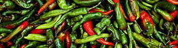

Thai Gemüse
4,5 von 6knoblauch, chili, thai-spinat, ocras und thai-frühlingszwiebeln mit etwas oel im wok nur ganz kurz anbraten,
damit das gemüse knackig bleibt. viel austernsauce und etwas sojasauce beigeben, kurz danach
nochmals ein wenig wasser dazu.
